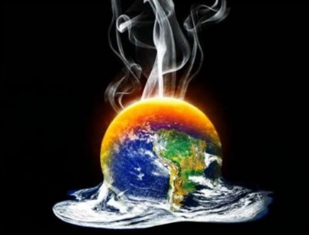

|  |
El cambio climático global ya tiene efectos que se pueden observar en el medio ambiente. Los glaciares se han encogido, el hielo en los ríos y lagos se está derritiendo antes de tiempo, los hábitats de plantas y animales han cambiado y los árboles florecen antes. Los efectos que los científicos predijeron en el pasado que surgirían del cambio climático global están sucediendo ahora: pérdida del hielo marino, aumento acelerado del nivel del mar y olas de calor más intensas. Se espera que el océano Ártico se quede esencialmente sin hielo en el verano antes de mediados de siglo. |
|
|---|---|
El cambio continuará produciéndose durante este siglo y también posteriormente
Se proyecta que el cambio climático continúe a lo largo de este siglo y posteriormente también. La magnitud del cambio climático más allá de las décadas siguientes dependerá fundamentalmente de la cantidad de gases que atrapan calor que se emitan a escala global y de cuán sensible sea el clima de la Tierra a dichas emisiones. |
|
El nivel del mar aumentará de 1 a 4 pies para 2100 Desde el inicio de las mediciones confiables, en 1880, el nivel del mar ha aumentado cerca de 8 pulgadas. Se estima que subirá entre 1 y 4 pies para 2100. Esto se debe al agua adicional que proviene del deshielo y a la expansión del agua del mar al calentarse. |